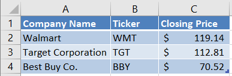
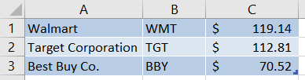
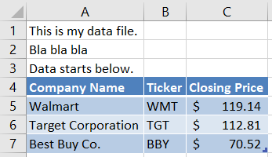

Loading Data Into Pandas#
Learning Objectives#
- Use the pd.read_excel function to:
- Create a DataFrame from a simple, properly formatted Excel file with a single sheet.
- Import data from a specific worksheet.
- Import data that is missing a header row.
- Skip rows in an Excel worksheet
- Use the pd.read_csv function to:
- Create a DataFrame from a clean CSV file.
- Import CSV data that lacks a header row.
- Skip rows in a CSV file.
- Predict when numbers in CSV files will be imported as strings.
- Clean a column of strings by removing unwanted characters, including leading and trailing spaces.
- Working with Dates:
- Understand that dates in CSV files will be imported as strings.
- Use the parse_dates argument to tell Pandas to parse dates in specific columns.
- Predict when parse_dates will not perform a desired conversion.
- Use pd.to_datetime to convert a column of dates.
- Be aware of the standard date format strings at strftime.org
Overview#
In this chapter, you will learn how to load data into a Pandas DataFrame. Remember that loading is the process of reading data from its source format into a software package.
While there are many different source formats for data, we will focus on only two in this chapter, Excel files and CSV files. As an accountant, you are very likely to encounter these. We will not show you how to load data from a database at this time.
Imports#
import numpy as np
import pandas as pd
The read_excel Function#
Pandas provides a really nice function called read_excel for reading data from an Excel file. This function is very powerful and flexible, but for teaching purposes, we’ll start with a really simple example of its use.
Using read_excel with a Simple Excel Workbook (1 sheet, properly formatted data)#
Pandas provides a really nice function called read_excel for reading data from an Excel file. This function is very powerful and flexible, but for teaching purposes, we’ll start with a really simple example of its use.
When you downloaded these course notes, you should have also downloaded two subfolders, data and imgs. Inside the data subfolder, there should be an Excel file named Stocks1.xlsx. Open that file in Excel so you can see its contents. For convenience, we include a snapshot of its contents below. Notice that the file contains a single worksheet named Sheet1.

To read this Excel sheet into a DataFrame, we will call the function pd.read_excel. We will pass a single argument, a path to the file. Notice that, in the code below, I used what’s called a “relative path”. Instead of specifying the full path to the file, I told Python to look in the current folder for a subfolder called data. Within that subfolder, look for a file Stocks1.xlsx. I could have also used the full path, which on my computer is C:\Users\vanand\Box Sync\ACCY 570 Fall 2019\Common\Course notes\Unit 3 - Working with datasets\data\Stocks1.xlsx.
dfStocks = pd.read_excel('data/Stocks1.xlsx')
dfStocks
| Company Name | Ticker | Closing Price | |
|---|---|---|---|
| 0 | Walmart | WMT | 119.14 |
| 1 | Target Corporation | TGT | 112.81 |
| 2 | Best Buy Co. | BBY | 70.52 |
That’s it! It’s that simple. If we check the type of the variable dfStocks by typing type(dfStocks), the output will be pandas.core.frame.DataFrame.
Notice that the read_excel function assumed that the first row contained column names and automatically used them as column labels in the DataFrame. Also notice that, even though column C of the Excel file contains dollar signs, read_excel figured out that we wanted floats and automatically converted the values to float. To see this, run the following code. The code uses some functionality you haven’t learned yet, so don’t worry if you don’t understand why it works.
dfStocks['Closing Price'].dtype
dtype('float64')
Using read_excel with an Excel Workbook with Multiple Sheets of properly formatted data#
Often your Excel workbooks will have multiple worksheets. By default, read_excel will read data from the first worksheet in the workbook. If you want to read a different worksheet, use the optional keyword argument sheet_name. The sheet_name argument accepts the following values:
A string containing the name of the worksheet
A zero-based integer index of the worksheet. 0 means the first worksheet, 1 means the second worksheet, and so on.
To see the sheet_name argument in action, let’s work with a second Excel file, stocks2.xlsx. This file should be located in the subfolder data that resides in the same folder as this notebook. Open the Excel file in Excel and take a look. Notice there are two worksheets, 10-18 Data and 10-21 Data. Let’s load only the second worksheet.
# Read the second worksheet
# We could also have used the argument sheet_name=1
dfSheet2 = pd.read_excel('data/stocks2.xlsx', sheet_name="10-21 Data")
dfSheet2
| Company Name | Ticker | Closing Price | |
|---|---|---|---|
| 0 | Microsoft | MSFT | 138.43 |
| 1 | Apple | AAPL | 240.51 |
| 2 | GOOG | 1246.15 | |
| 3 | Oracle | ORCL | 55.13 |
| 4 | SAP | SAP | 132.71 |
Notice that we passed the argument sheet_name="10-21 Data" to read_excel. That told read_excel to read the contents of the worksheet named “10-21 Data”. Since that worksheet was the second worksheet in the workbook, we could also have passed the argument sheet_name=1.
Also, notice that in Excel, Google’s stock price is shown as “\$1,245.15”. There’s a dollar sign and a comma. However, internally Excel represents that as a float and read_excel automatically gets that float.
Using read_excel When the Header Row is Missing#
Real-world data is often messy. In this section, we’ll show you how to handle a situation where the header row is missing from your data.
Open the file Stocks DIRTY.xlsx in the data subfolder. That workbook has two worksheets. We show you a snapshot of the first worksheet, No header, below.

Let’s see what happens when we try to load this data without telling read_excel that the header is missing:
dfStocks = pd.read_excel('data/Stocks DIRTY.xlsx', sheet_name="No header")
dfStocks
| Walmart | WMT | 119.14 | |
|---|---|---|---|
| 0 | Target Corporation | TGT | 112.81 |
| 1 | Best Buy Co. | BBY | 70.52 |
Ick. That’s not good! It looks like read_excel assumed that the first row contained header information. It used the values in the first row as column labels.
Let’s try again. This time, we will use the header keyword argument. If we pass that argument with the Python value None, that tells read_excel that there’s no header:
dfStocks = pd.read_excel('data/Stocks DIRTY.xlsx',
sheet_name="No header",
header=None)
dfStocks
| 0 | 1 | 2 | |
|---|---|---|---|
| 0 | Walmart | WMT | 119.14 |
| 1 | Target Corporation | TGT | 112.81 |
| 2 | Best Buy Co. | BBY | 70.52 |
Okay, that’s better. Now it put all the data in its proper place. But we still don’t have meaningful column names. We could assign those after the fact, like this:
dfStocks.columns = ['Company Name', 'Ticker', 'Price']
Or… We can use the keyword argument names when we call read_excel! Let’s do that.
dfStocks = pd.read_excel('data/Stocks DIRTY.xlsx',
sheet_name="No header",
header=None,
names=['Company Name', 'Ticker', 'Price'])
dfStocks
| Company Name | Ticker | Price | |
|---|---|---|---|
| 0 | Walmart | WMT | 119.14 |
| 1 | Target Corporation | TGT | 112.81 |
| 2 | Best Buy Co. | BBY | 70.52 |
It’s completely up to you whether, in a situation like this, you want to load the data and then assign column names, or use the names argument. Either works. You could also add a header row to the Excel file.
Skipping rows with read_excel#
Real-world data is often messy. In this section, we’ll show you how to handle a situation where the data does not begin in the first row. This situation is common. Often, the creator of the Excel file will add comments or a description of the above data.
As an example of this, open the file Stocks DIRTY.xlsx in the data subfolder. That workbook has two worksheets. We show you a snapshot of the second worksheet, Skip rows, below.

Let’s see what happens when we try to load this data without telling read_excel that the real data begins in row 4:
dfStocks = pd.read_excel('data/Stocks DIRTY.xlsx', sheet_name="Skip rows")
dfStocks
| This is my data file. | Unnamed: 1 | Unnamed: 2 | |
|---|---|---|---|
| 0 | Bla bla bla | NaN | NaN |
| 1 | Data starts below. | NaN | NaN |
| 2 | Company Name | Ticker | Closing Price |
| 3 | Walmart | WMT | 119.14 |
| 4 | Target Corporation | TGT | 112.81 |
| 5 | Best Buy Co. | BBY | 70.52 |
Yikes!!! That’s a mess! It figured out that there are 3 columns of data and it used the first row as headings. Since the data appear to have 3 columns, and there was nothing in cells B1 and C1, it had to make up names for the first two columns. Also, since there were no values in cells B2, C2, B3, and D3, it inferred missing values (NaN stands for “not a number” and is the symbol for missing data in Pandas).
We could clean this up in Pandas by deleting the first 3 rows and assigning column names manually. But in a case like this, it’s usually better to import the data correctly the first time. You can avoid issues like this by telling read_excel to simply skip the first 3 rows. There’s a keyword argument skiprows in read_excel. To use this argument, pass skiprows a list. To skip the first 3 rows, the list should be [0,1,2]. That tells read_excel to skip rows 0, 1, and 2.
Let’s see it in action.
dfStocks = pd.read_excel('data/Stocks DIRTY.xlsx',
sheet_name="Skip rows",
skiprows=[0,1,2])
dfStocks
| Company Name | Ticker | Closing Price | |
|---|---|---|---|
| 0 | Walmart | WMT | 119.14 |
| 1 | Target Corporation | TGT | 112.81 |
| 2 | Best Buy Co. | BBY | 70.52 |
Much better! And surprisingly easy.
Getting help with read_excel#
How did we know about the available keyword arguments for read_excel? We read the documentation! The official documentation for the Pandas read_excel function is here. You can also do a Google search for “Pandas read excel” and the first link will be to the same page. Take a look at that page and browse the available arguments. You’ll see that read_excel offers a lot of features, especially for dealing with dates, missing data, and Excel error values.
Fun fact: a long time ago, an obnoxious programmer coined the abbreviation RTFM. It stands for “read the f***ing manual.” :) It’s typically used in response to a question whose answer is clearly available in the documentation.
The read_csv Function#
Pandas provides a really nice function called read_csv for reading data from a CSV file. It can also be used to read tab-delimited data, and data from other delimited text files. This function is extremely powerful and flexible, and behaves very similarly to the read_excel function.
Using read_csv with a “clean” CSV file#
When you downloaded these course notes, you should have also downloaded two subfolders, data and imgs. Inside the data subfolder, there should be a CSV file named Stocks1.csv. If you open that file in a text editor, you will see the following data:
Company Name,Ticker,Closing Price
Walmart,WMT, $119.14
Target Corporation,TGT, $112.81
Best Buy Co.,BBY, $70.52
To read this data into a DataFrame, we will call the function pd.read_csv. We will pass a single argument, a path to the file. Notice that, in the code below, I used what’s called a “relative path”. Instead of specifying the full path to the file, I told Python to look in the current folder for a subfolder called data. Within that subfolder, look for a file Stocks.csv. I could have also used the full path, which on my computer is C:\Users\vanand\Box Sync\ACCY 570 Fall 2019\Common\Course notes\Unit 3 - Working with datasets\data\Stocks.csv.
dfStocks = pd.read_csv('data/Stocks.csv')
dfStocks
| Company Name | Ticker | Closing Price | |
|---|---|---|---|
| 0 | Walmart | WMT | 119.14 |
| 1 | Target Corporation | TGT | 112.81 |
| 2 | Best Buy Co. | BBY | 70.52 |
Notice that the read_csv function assumed that the first row contained column names and automatically used them as column labels in the DataFrame. Also notice that, the data in the third column was automatically converted to float. read_csv attempts to infer the type of each column by looking at the values in the first 100 rows. In this case, it found that it could convert every value in the third column to a float, so it did.
To verify that the values are floats, run the following code. Don’t worry if you don’t understand why it works.
dfStocks['Closing Price'].dtype
dtype('float64')
Using read_csv When the Header Row is Missing#
Real-world data is often messy. In this section, we’ll show you how to handle a situation where the header row is missing from your data.
If you open the file Stocks1 NO HEADER.CSV in the data subfolder, you will see the following contents:
Walmart,WMT,119.14
Target Corporation,TGT,112.81
Best Buy Co.,BBY,70.52
The data is the same as before, but there’s no header.
Let’s see what happens when we try to load this data without telling read_csv that the header is missing:
dfStocks = pd.read_csv('data/Stocks NO HEADER.csv')
dfStocks
| Walmart | WMT | 119.14 | |
|---|---|---|---|
| 0 | Target Corporation | TGT | 112.81 |
| 1 | Best Buy Co. | BBY | 70.52 |
Ick. That’s not good! It looks like read_csv assumed that the first row contained header information. It used the values in the first row as column labels.
Let’s try again. This time, we will use the header keyword argument. If we pass that argument with the Python value None, that tells read_csv that there’s no header:
dfStocks = pd.read_csv('data/Stocks NO HEADER.csv', header=None)
dfStocks
| 0 | 1 | 2 | |
|---|---|---|---|
| 0 | Walmart | WMT | 119.14 |
| 1 | Target Corporation | TGT | 112.81 |
| 2 | Best Buy Co. | BBY | 70.52 |
Okay, that’s better. Now it put all the data in its proper place. But we still don’t have meaningful column names. We could assign those after the fact, like this:
dfStocks.columns = ['Company Name', 'Ticker', 'Price']
Or… We can use the keyword argument names when we call read_csv. Let’s do that.
dfStocks = pd.read_csv('data/Stocks NO HEADER.csv',
header=None,
names=['Company Name', 'Ticker', 'Price'])
dfStocks
| Company Name | Ticker | Price | |
|---|---|---|---|
| 0 | Walmart | WMT | 119.14 |
| 1 | Target Corporation | TGT | 112.81 |
| 2 | Best Buy Co. | BBY | 70.52 |
It’s completely up to you whether, in a situation like this, you want to load the data and then assign column names, or use the names argument. Either works. You could also add a header row to the CSV file.
Skipping rows with read_csv#
Real-world data is often messy. In this section, we’ll show you how to handle a situation where the data does not begin in the first row. This situation is common and can manifest itself in two ways:
There are blank lines at the beginning of the file
The creator of the CSV file added comments or a description of the above data.
Below we show you how to handle these two cases.
Handling blank lines at the beginning of the CSV file#
Consider the following data, which is also in the file Stocks BLANK LINES.csv.
Company Name,Ticker,Closing Price
Walmart,WMT,119.14
Target Corporation,TGT,112.81
Best Buy Co.,BBY,70.52
read_csv makes it really easy to handle this. Simply set the optional keyword argument skip_blank_lines to True. Actually, you don’t even have to bother since by default this is set to True! But let’s play with it anyways.
dfStocks = pd.read_csv('data/Stocks BLANK LINES.csv',
skip_blank_lines=True)
dfStocks
| Company Name | Ticker | Closing Price | |
|---|---|---|---|
| 0 | Walmart | WMT | 119.14 |
| 1 | Target Corporation | TGT | 112.81 |
| 2 | Best Buy Co. | BBY | 70.52 |
We could also call read_csv without explicitly setting skip_blank_lines since its default value is True.
dfStocks = pd.read_csv('data/Stocks BLANK LINES.csv')
dfStocks
| Company Name | Ticker | Closing Price | |
|---|---|---|---|
| 0 | Walmart | WMT | 119.14 |
| 1 | Target Corporation | TGT | 112.81 |
| 2 | Best Buy Co. | BBY | 70.52 |
Handling non-data lines at the beginning of the CSV file#
Consider the CSV file Stocks UNNEEDED LINES.csv included with this notebook. Say your data looks like this:
Look at me! I'm a description.
Bla bla bla
Don't put stupid lines like this in your CSV files.
Company Name,Ticker,Closing Price
Walmart,WMT,119.14
Target Corporation,TGT,112.81
Best Buy Co.,BBY,70.52
To skip the first lines of that file, use the skiprows argument. Just as with the read_excel function, you need to pass skiprows a list of the rows you want to skip. Remember that the line numbers are zero-based.
Here’s the code to skip the first 4 rows in Stocks UNNEEDED LINES.csv:
dfStocks = pd.read_csv('data/Stocks UNNEEDED LINES.csv',
skiprows=[0,1,2,3])
dfStocks
| Company Name | Ticker | Closing Price | |
|---|---|---|---|
| 0 | Walmart | WMT | 119.14 |
| 1 | Target Corporation | TGT | 112.81 |
| 2 | Best Buy Co. | BBY | 70.52 |
Converting Accounting Strings to Floats#
In an earlier example, you worked with Excel data in accounting format. Excel stores values and number formats separately and that helps functions like read_excel; functions that read Excel data are able to read the value and its data type and ignore the formatting if they choose.
CSV is a text format. When a CSV file contains numbers formatted as text in an accounting format, such as \$136.72, it becomes difficult for Python functions to read the true value. You may think this is trivial – it’s just dollar signs, commas, and parentheses, right? But remember that other countries have their own accounting formats and so the number of possible formats is large.
When you try to read a CSV file that contains a number formatted as an accounting string, Python will read that number in as text. You will need to clean it and then manually convert it. In this section, we will walk you through that process.
Consider the file Stocks ACCTG FORMAT.csv. This file is simply the worksheet 10-21 Data from the file Stocks2.xlsx saved as CSV. In other words, we used Excel to save to CSV and this is what we got. Here’s the contents:
Company Name,Ticker,Closing Price
Microsoft,MSFT, $138.43
Apple,AAPL, $240.51
Google,GOOG," $1,246.15 "
Oracle,ORCL, $55.13
SAP,SAP, $132.71
First, notice that the price for Google, which has a comma in it, is stored in quotes. You can use quotes to enclose values with commas. Also notice that the closing prices have dollar signs and leading spaces. Let’s see what happens when we import this file using read_csv:
dfStocks = pd.read_csv('data/Stocks ACCTG FORMAT.csv')
dfStocks
| Company Name | Ticker | Closing Price | |
|---|---|---|---|
| 0 | Microsoft | MSFT | $138.43 |
| 1 | Apple | AAPL | $240.51 |
| 2 | GOOG | $1,246.15 | |
| 3 | Oracle | ORCL | $55.13 |
| 4 | SAP | SAP | $132.71 |
That doesn’t look too bad, right? It actually looks just you might like! So should we just move on to the next section? No problem, right?
Not so fast. Let’s look at that first stock price:
dfStocks.at[0, 'Closing Price']
' $138.43 '
Hmm. That’s not good. It stored the number as a string. And it’s not clean. There are leading and trailing spaces, and there’s that dollar sign. If you check the other values, you’ll find that all of them are strings. That will make it hard to work with them in Python. We need to convert them to numbers.
The process for converting a string to a number in Python is:
Remove all characters other than digits, dots, and negative signs. The number MUST be in the format -dddd.ddd, where d is a digit 0-9, and the negative sign and decimal are optional.
Run the appropriate function to convert a string to a float.
Following is the code to remove the unwanted characters. Look at the code first and then we’ll explain how it works.
dfStocks['Closing Price'] = dfStocks['Closing Price'].str.replace('$', '')
dfStocks['Closing Price'] = dfStocks['Closing Price'].str.replace(',', '')
dfStocks['Closing Price'] = dfStocks['Closing Price'].str.strip()
In the above cell, the right-hand-side of first line of code says, “Take the closing price column and call the Pandas string replace function. Replace all dollar signs with nothing.” This creates a new column of data. We assign the new column to the existing column to save it. The second line of code is similar; it replaces any commas with nothing.
The third line of code strips the strings. That means it removes any leading and trailing whitespace characters.
Notice that the methods we used were .str.replace and .str.strip. These are string methods of the Pandas Series class. The choice of names (replace, strip) and the arguments are identical to Python’s built-in string functions. This is not a coincidence. Where possible, the creators of Pandas tried to follow similar syntax as used in Python’s built-in string functions. For documentation on the Pandas string functions, click here.
Let’s look at our partially cleaned DataFrame:
dfStocks
| Company Name | Ticker | Closing Price | |
|---|---|---|---|
| 0 | Microsoft | MSFT | 138.43 |
| 1 | Apple | AAPL | 240.51 |
| 2 | GOOG | 1246.15 | |
| 3 | Oracle | ORCL | 55.13 |
| 4 | SAP | SAP | 132.71 |
And let’s take a look at one of the prices:
dfStocks.at[2, 'Closing Price']
'1246.15'
This is better. The numbers are still stored as strings, but at least they are properly formatted. Now, let’s convert them to float.
dfStocks['Closing Price'] = dfStocks['Closing Price'].astype(float)
dfStocks
| Company Name | Ticker | Closing Price | |
|---|---|---|---|
| 0 | Microsoft | MSFT | 138.43 |
| 1 | Apple | AAPL | 240.51 |
| 2 | GOOG | 1246.15 | |
| 3 | Oracle | ORCL | 55.13 |
| 4 | SAP | SAP | 132.71 |
The above code took the closing price column and converted it to float. The astype function returned a whole new column. We assigned this to the existing column and now we’re good. Let’s take a look at one of the closing prices and make sure it’s a float:
x = dfStocks.at[1,'Closing Price']
print(f"Apple's closing price was {x} and the data type is {type(x)}.")
Apple's closing price was 240.51 and the data type is <class 'numpy.float64'>.
Parsing Dates#
Working with dates is a giant pain in the you-know-what. The reason is that there are so many different ways to write and store dates, and there are so many intricacies, such as leap years and daylight savings time. All of that means that you’re probably going to have to deal with dates at some point when you work with data.
Pandas (and Excel) provides a lot of useful functions for working with dates. If you know what you want, it’s usually fairly easy to get it. In this section, we’ll show you that when you import a date from a CSV file, it will be stored as a string. We’ll also show you how to handle different date formats.
Let’s begin by taking a look at the file GM.csv that contains stock data for General Motors Corporation in April 2019. If you open the file in a text editor, here’s what you will see:
Date1,Date2,Date3,Company Name,Ticker,Closing Price
4-1-2019,1/4/2019,01 Apr 19,General Motors,GM,37.76
4-2-2019,2/4/2019,02 Apr 19,General Motors,GM,37.81
4-3-2019,3/4/2019,03 Apr 19,General Motors,GM,38.39
4-4-2019,4/4/2019,04 Apr 19,General Motors,GM,38.79
4-5-2019,5/4/2019,05 Apr 19,General Motors,GM,38.94
4-8-2019,8/4/2019,08 Apr 19,General Motors,GM,39.06
4-9-2019,9/4/2019,09 Apr 19,General Motors,GM,38.86
4-10-2019,10/4/2019,10 Apr 19,General Motors,GM,39.25
Notice that we stored each date in three formats. Let’s see what happens when we import it using read_csv without telling it anything about dates:
dfGM = pd.read_csv('data/GM.csv')
dfGM
| Date1 | Date2 | Date3 | Company Name | Ticker | Closing Price | |
|---|---|---|---|---|---|---|
| 0 | 4-1-2019 | 1/4/2019 | 01 Apr 19 | General Motors | GM | 37.76 |
| 1 | 4-2-2019 | 2/4/2019 | 02 Apr 19 | General Motors | GM | 37.81 |
| 2 | 4-3-2019 | 3/4/2019 | 03 Apr 19 | General Motors | GM | 38.39 |
| 3 | 4-4-2019 | 4/4/2019 | 04 Apr 19 | General Motors | GM | 38.79 |
| 4 | 4-5-2019 | 5/4/2019 | 05 Apr 19 | General Motors | GM | 38.94 |
| 5 | 4-8-2019 | 8/4/2019 | 08 Apr 19 | General Motors | GM | 39.06 |
| 6 | 4-9-2019 | 9/4/2019 | 09 Apr 19 | General Motors | GM | 38.86 |
| 7 | 4-10-2019 | 10/4/2019 | 10 Apr 19 | General Motors | GM | 39.25 |
If you check the types of the date values, you will see they are all stored as strings. That’s not what we want.
You can tell Pandas which columns contain dates and it will try to convert them from strings. It recognizes many date formats and can often get it right. To use this functionality, use the parse_dates keyword argument and pass it a list of columns that contain dates. Let’s see what happens when we use that argument:
dfGM = pd.read_csv('data/GM.csv', parse_dates=['Date1', 'Date2', 'Date3'])
dfGM
C:\Users\vican\AppData\Local\Temp\ipykernel_25732\290965092.py:1: UserWarning: Could not infer format, so each element will be parsed individually, falling back to `dateutil`. To ensure parsing is consistent and as-expected, please specify a format.
dfGM = pd.read_csv('data/GM.csv', parse_dates=['Date1', 'Date2', 'Date3'])
| Date1 | Date2 | Date3 | Company Name | Ticker | Closing Price | |
|---|---|---|---|---|---|---|
| 0 | 2019-04-01 | 2019-01-04 | 2019-04-01 | General Motors | GM | 37.76 |
| 1 | 2019-04-02 | 2019-02-04 | 2019-04-02 | General Motors | GM | 37.81 |
| 2 | 2019-04-03 | 2019-03-04 | 2019-04-03 | General Motors | GM | 38.39 |
| 3 | 2019-04-04 | 2019-04-04 | 2019-04-04 | General Motors | GM | 38.79 |
| 4 | 2019-04-05 | 2019-05-04 | 2019-04-05 | General Motors | GM | 38.94 |
| 5 | 2019-04-08 | 2019-08-04 | 2019-04-08 | General Motors | GM | 39.06 |
| 6 | 2019-04-09 | 2019-09-04 | 2019-04-09 | General Motors | GM | 38.86 |
| 7 | 2019-04-10 | 2019-10-04 | 2019-04-10 | General Motors | GM | 39.25 |
Ignore the warning for a moment and take a look at the data frame. First, notice that the dates in the three columns are formatted differently than in the CSV file. That is how Pandas formats dates by default. We can check whether those values are dates. Let’s perform a spot check:
type(dfGM.at[3, 'Date2'])
pandas._libs.tslibs.timestamps.Timestamp
The “Timestamp” class is a Pandas class for storing datetime values. Thus, all the date strings were converted to dates.
But… were they converted correctly? Take a look at the column Date2. It got the day and month backwards!!! Oops. In the CSV file, the day and month are reverse in the column Date2. Pandas warned us about that. It said that it was unsure about the date format. It converted the dates from strings, but notified us that it might have been wrong. How can we fix this?
If the day and month are reversed in all columns, you can pass the keyword argument dayfirst and set its value to True. But if you do that, Pandas will assume that for every date, even those in the first and third columns. Here are some other options:
Do not tell Pandas to parse the date for Date2 and Date3. Then convert those date manually in Pandas.
Pass a conversion function to Pandas using the converters keyword argument.
Do not import the Date2 and Date3 columns. Import those into separate DataFrames and set dayfirst to true. Then merge this second DataFrame with the DataFrame that contains all the other columns.
None of these options is simple even though all will work. Let’s go with option 1 for now. Run the following code. It will import the entire CSV file but will not parse the dates in the Date2 and Date3 columns.
# Notice that we are not parsing the Date2 column
dfGM = pd.read_csv('data/GM.csv', parse_dates=['Date1'], dayfirst=False)
dfGM
| Date1 | Date2 | Date3 | Company Name | Ticker | Closing Price | |
|---|---|---|---|---|---|---|
| 0 | 2019-04-01 | 1/4/2019 | 01 Apr 19 | General Motors | GM | 37.76 |
| 1 | 2019-04-02 | 2/4/2019 | 02 Apr 19 | General Motors | GM | 37.81 |
| 2 | 2019-04-03 | 3/4/2019 | 03 Apr 19 | General Motors | GM | 38.39 |
| 3 | 2019-04-04 | 4/4/2019 | 04 Apr 19 | General Motors | GM | 38.79 |
| 4 | 2019-04-05 | 5/4/2019 | 05 Apr 19 | General Motors | GM | 38.94 |
| 5 | 2019-04-08 | 8/4/2019 | 08 Apr 19 | General Motors | GM | 39.06 |
| 6 | 2019-04-09 | 9/4/2019 | 09 Apr 19 | General Motors | GM | 38.86 |
| 7 | 2019-04-10 | 10/4/2019 | 10 Apr 19 | General Motors | GM | 39.25 |
If you check, you will see that the values in the Date2 and Date3 columns are still strings. Following is the code to convert Date2 to a date. We will use the function pd.to_datetime. This function allows us to give it a format string that tells it the exact format to use. If you want a reference for the formatting codes, which are used in other programming languages too, see here.
dfGM['Date2'] = pd.to_datetime(dfGM['Date2'], format='%d/%m/%Y')
dfGM
| Date1 | Date2 | Date3 | Company Name | Ticker | Closing Price | |
|---|---|---|---|---|---|---|
| 0 | 2019-04-01 | 2019-04-01 | 01 Apr 19 | General Motors | GM | 37.76 |
| 1 | 2019-04-02 | 2019-04-02 | 02 Apr 19 | General Motors | GM | 37.81 |
| 2 | 2019-04-03 | 2019-04-03 | 03 Apr 19 | General Motors | GM | 38.39 |
| 3 | 2019-04-04 | 2019-04-04 | 04 Apr 19 | General Motors | GM | 38.79 |
| 4 | 2019-04-05 | 2019-04-05 | 05 Apr 19 | General Motors | GM | 38.94 |
| 5 | 2019-04-08 | 2019-04-08 | 08 Apr 19 | General Motors | GM | 39.06 |
| 6 | 2019-04-09 | 2019-04-09 | 09 Apr 19 | General Motors | GM | 38.86 |
| 7 | 2019-04-10 | 2019-04-10 | 10 Apr 19 | General Motors | GM | 39.25 |
How did that function work? pd.to_datetime takes a single value or a column of values and attemps to convert each value to a valid Pandas date. The format argument is optional. However, if you do not give it a format string, it will assume month comes first. You can pass it an explicit format string, and the one we used was '%d/%m/%Y'. If you check out the reference we gave you (see here), you will see that %d means a day as expressed by 2 digits, %m means a month as expressed by 2 digits, and %Y means a 4-digit year.
Let’s do that again for the Date3 column. Here, we use the format string '%d %b %y'. This tells Pandas that the two-digit day ('%d') is followed by a space, then the 3-letter month abbreviation ('%b') and a space, then the 2-digit year ('%y').
dfGM['Date3'] = pd.to_datetime(dfGM['Date3'], format='%d %b %y')
dfGM
| Date1 | Date2 | Date3 | Company Name | Ticker | Closing Price | |
|---|---|---|---|---|---|---|
| 0 | 2019-04-01 | 2019-04-01 | 2019-04-01 | General Motors | GM | 37.76 |
| 1 | 2019-04-02 | 2019-04-02 | 2019-04-02 | General Motors | GM | 37.81 |
| 2 | 2019-04-03 | 2019-04-03 | 2019-04-03 | General Motors | GM | 38.39 |
| 3 | 2019-04-04 | 2019-04-04 | 2019-04-04 | General Motors | GM | 38.79 |
| 4 | 2019-04-05 | 2019-04-05 | 2019-04-05 | General Motors | GM | 38.94 |
| 5 | 2019-04-08 | 2019-04-08 | 2019-04-08 | General Motors | GM | 39.06 |
| 6 | 2019-04-09 | 2019-04-09 | 2019-04-09 | General Motors | GM | 38.86 |
| 7 | 2019-04-10 | 2019-04-10 | 2019-04-10 | General Motors | GM | 39.25 |
Getting help with read_csv#
How did we know about the available keyword arguments for read_csv? We read the documentation! The official documentation for the Pandas read_excel function is here. You can also do a Google search for “Pandas read csv” and the first link will be to the same page. Take a look at that page and browse the available arguments. You’ll see that read_csv offers a lot of features, especially for dealing with dates, missing data, and Excel error values.